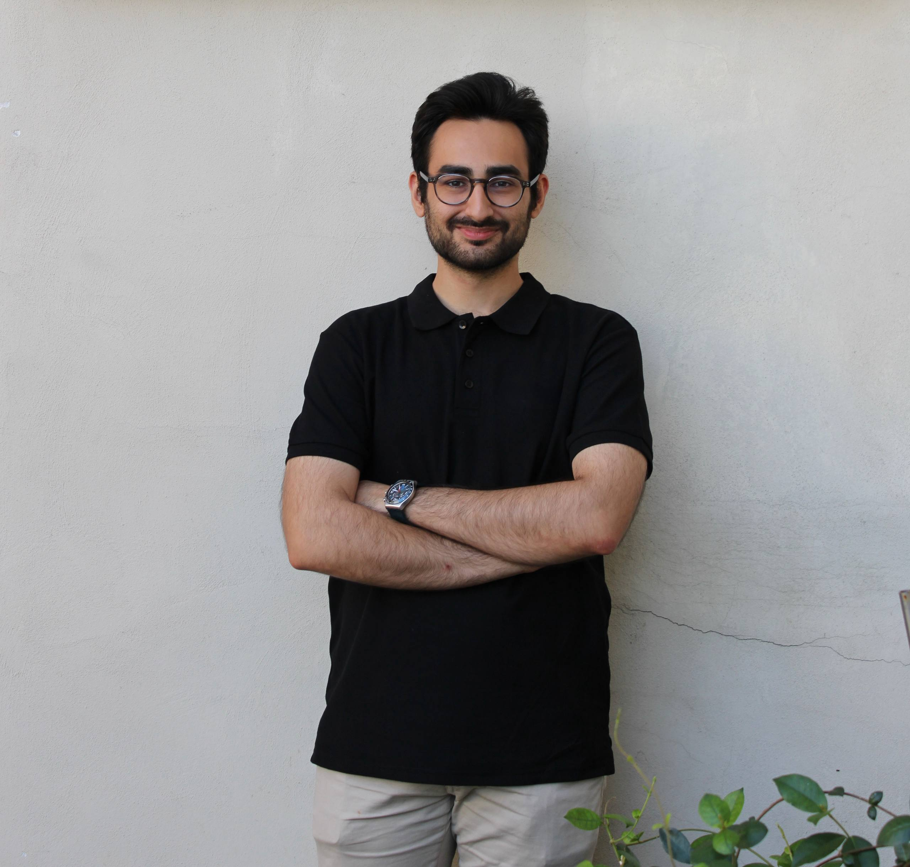

01
Programming & Workflow
Python · MATLAB · Git · Linux

M.Sc. Mechanical Engineering · Politecnico di Milano
I develop real-time computer-vision and state-estimation systems for robust detection, pose estimation, and target tracking. I am currently developing drone and camera-based estimation systems at SunCubes while pursuing an M.Sc. in Mechatronics and Robotics at Politecnico di Milano.
About
Profile
I am pursuing an M.Sc. in Mechanical Engineering in the Mechatronics and Robotics track at Politecnico di Milano. My work focuses on computer vision, camera-based pose estimation, target tracking, Kalman filtering, sensor fusion, and autonomous robotic systems. Through academic and industry projects, I have developed practical experience with OpenCV, PyTorch, camera calibration, synthetic-data generation, uncertainty modelling, PnP pose estimation, Kalman filtering, innovation-based validation, and real-time sensor processing. I am particularly interested in perception systems that remain reliable under changing illumination, image noise, partial visibility, and uncertain measurements. My broader background includes nonlinear and optimal control, robot navigation, reinforcement learning, system identification, ROS 2, and PX4-based UAV estimation.
Skills & Tools
Python · MATLAB · Git · Linux
OpenCV · PyTorch · CNN Training · Image Processing · Synthetic Data · Camera Calibration
Kalman Filtering · MEKF · Sensor Fusion · Uncertainty Propagation · Innovation Gating · NIS Analysis
ROS 2 · PX4 / MAVLink · Gazebo · MPC · LQR · Reinforcement Learning
Education
Work

Developed a real-time computer-vision pipeline for recognizing fiducial targets and estimating their 6-DoF pose under blur, glare, sensor noise, low light, and changing viewing geometry. A PyTorch CNN recovers marker identity and orientation when classical decoding becomes unreliable, while a camera-calibrated pixel-noise model assigns a separate 2×2 covariance to every detected corner. Weighted MLPnP uses these observation-specific uncertainties to estimate both pose and a corresponding 6×6 pose covariance.
Open project page →
Formulated and solved a nonlinear optimal control problem for a 2D vehicle with obstacle avoidance, comparing indirect and direct single-shooting methods and LQR tracking around the nominal trajectory.
Open project page →Built a custom RL environment where an agent coordinates two boxes, avoids collisions, and learns motion strategies through reward shaping, architecture comparison, and PPO training.
Open project page →
Full autonomous navigation pipeline: SLAM mapping, A* global planning, AMCL localization, and a pure-pursuit controller with a laser-scan safety layer for real-time obstacle avoidance.
Open project page →
Independent MEKF estimating UAV position, velocity, attitude, and sensor biases from raw IMU, GPS, barometer, and magnetometer data. Validated in PX4 SITL; currently being extended for real hardware at SunCubes.
Open project page →Interests
Experience
Mar 2026
Present
Thesis Internship (Full-Time) · SunCubes · Milan, Italy Current
Developing perception and state-estimation algorithms for autonomous UAV applications. Designed an independent Multiplicative Extended Kalman Filter in Python for estimating position, velocity, attitude, and sensor biases from asynchronous IMU, GPS, barometer, and magnetometer measurements.
Built PX4/MAVLink data-processing and validation pipelines using PyMAVLink, QGroundControl, Gazebo simulation, and experimental flight logs. Characterized sensor noise, tuned process and measurement covariances, and evaluated estimator performance using RMSE, innovation statistics, NIS, rejection rates, and consistency analysis.
Developed a camera-based pose-estimation pipeline using OpenCV, PyTorch, ArUco observations, adaptive pixel uncertainty, and weighted MLPnP. Currently investigating Kalman-based temporal tracking and federated fusion between independently generated camera and drone pose estimates.
Jun 2023
Feb 2024
Research Assistant · Shahid Beheshti University
Supported research in the Energy Engineering Laboratory, assisted undergraduate students, prepared conference posters, collaborated with graduate researchers, and gained experience with research workflows and photovoltaic technologies.
Jun 2022
Sep 2022
Summer Intern · Khorasan Steel Complex
Worked with the repair line support team for the rebar rolling mill, assisted with inspections and maintenance, and gained hands-on exposure to industrial workflows, machinery operation, and troubleshooting practices.
Open to research collaborations, academic opportunities, and engineering roles.